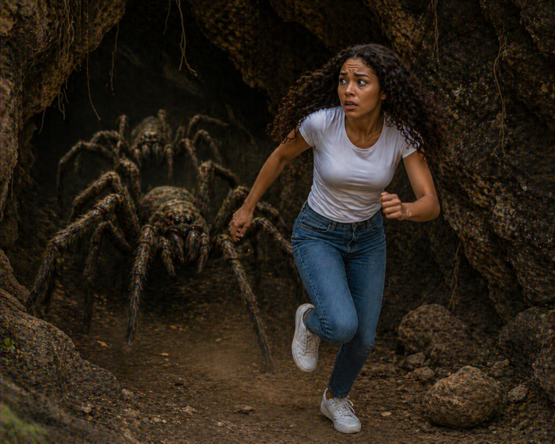

|
The helicopter blades slowed as Brooklyn stepped out onto the rocky
ledge, the wind whipping her hair as she looked up at the cave entrance
carved into the side of the mountain. Her heart raced—the shape of the
opening matched a sketch she had seen in her uncle’s notebook almost
exactly. Clutching her phone, she moved cautiously inside, using its
light to guide her through the narrow, uneven passage. The deeper she
went, the darker and quieter it became, until a faint scratching sound
echoed through the cave. She froze, lifting her phone higher—and the
beam of light revealed movement. Large, shadowy shapes shifted across
the walls. Then she saw them clearly—giant spiders, their legs
stretching across the rock as they turned toward her.
|
|
 |
Brooklyn’s breath caught as panic took over. She spun around and ran,
her footsteps slipping against the loose stones as the spiders scrambled
after her. The cave seemed longer on the way out, the light from the
entrance just out of reach. As she pushed harder, her foot caught on a
rock and she fell hard, pain shooting through her leg. Gritting her
teeth, she tried to stand, but couldn’t put weight on it. By the time
she was helped back to the helicopter and rushed to hospital, the
adrenaline had worn off, replaced by frustration. Lying in a hospital
bed, her leg bandaged, Brooklyn stared at the notebook beside her—knowing
she had found the right place… but hadn’t been ready for what was inside.
|
 Back to Start
Back to Start Google
Google